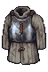
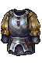
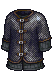
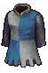
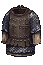
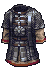

| Medium — CuirassesСредние — кирасы |
| Der Vyrne Heirloom CuirassФамильная кираса дер Вирнов | 2 | - RarityРедкостьUnique
- ProtectionЗащита7
-
- Physical ResistanceСопр. физ. урону+11%
- Piercing ResistanceСопр. колющему урону+4%
- Bleed ResistanceСопр. кровотечению+11%
-
- Dodge ChanceШанс уклонения-1%
- Crit AvoidanceИзбегание критов+6%
- EnergyЭнергия-2
- Energy RestorationРегенерация энергии-1%
-
- Experience GainПолучаемый опыт+4%
- Fatigue ResistanceСопр. усталости+5%
- DurabilityПрочность84
- PriceЦена550
| - RarityРедкостьUnique
- ProtectionЗащита10 (+3)
- Pain ResistanceСопр. боли+5%
- Physical ResistanceСопр. физ. урону+15% (+4)
- Piercing ResistanceСопр. колющему урону+4%
- Bleed ResistanceСопр. кровотечению+15% (+4)
- Move ResistanceСопр. перемещению+3%
- Dodge ChanceШанс уклонения-3% (-2)
- Crit AvoidanceИзбегание критов+5% (-1)
- EnergyЭнергия-7 (-5)
- Energy RestorationРегенерация энергии-1%
- FortitudeСтойкость+4
- Experience GainПолучаемый опыт+4%
- Fatigue ResistanceСопр. усталости+5%
- DurabilityПрочность140 (+56)
- PriceЦена800 (+250)
|
 Soldier CuirassСолдатская кираса | 3 | - RarityРедкостьCommon
- ProtectionЗащита12
- Physical ResistanceСопр. физ. урону+19%
- Piercing ResistanceСопр. колющему урону+11%
- Bleed ResistanceСопр. кровотечению+22%
- Dodge ChanceШанс уклонения-2%
- Crit AvoidanceИзбегание критов+8%
- EnergyЭнергия-4
- Energy RestorationРегенерация энергии-1%
-
-
- DurabilityПрочность130
- PriceЦена1450
| - RarityРедкостьCommon
- ProtectionЗащита14 (+2)
- Physical ResistanceСопр. физ. урону+20% (+1)
- Piercing ResistanceСопр. колющему урону+11%
- Bleed ResistanceСопр. кровотечению+22%
- Dodge ChanceШанс уклонения-2%
- Crit AvoidanceИзбегание критов+6% (-2)
- EnergyЭнергия-8 (-4)
- Energy RestorationРегенерация энергии-2% (-1)
- FortitudeСтойкость+6
- Fatigue ResistanceСопр. усталости-1%
- DurabilityПрочность160 (+30)
- PriceЦена1600 (+150)
|
| Mercenary CuirassКираса наёмника | 4 | - RarityРедкостьCommon
- ProtectionЗащита15
-
- Physical ResistanceСопр. физ. урону+23%
- Piercing ResistanceСопр. колющему урону+12%
- Bleed ResistanceСопр. кровотечению+26%
-
- Dodge ChanceШанс уклонения-3%
- Crit AvoidanceИзбегание критов+10%
- EnergyЭнергия-6
- Energy RestorationРегенерация энергии-1%
-
-
- DurabilityПрочность155
- PriceЦена3250
| - RarityРедкостьCommon
- ProtectionЗащита17 (+2)
- Pain ResistanceСопр. боли+5%
- Physical ResistanceСопр. физ. урону+24% (+1)
- Piercing ResistanceСопр. колющему урону+12%
- Bleed ResistanceСопр. кровотечению+25% (-1)
- Move ResistanceСопр. перемещению+4%
- Dodge ChanceШанс уклонения-3%
- Crit AvoidanceИзбегание критов+8% (-2)
- EnergyЭнергия-9 (-3)
- Energy RestorationРегенерация энергии-2% (-1)
- FortitudeСтойкость+8
- Fatigue ResistanceСопр. усталости-2%
- DurabilityПрочность180 (+25)
- PriceЦена3500 (+250)
|
 Captain CuirassКапитанская кираса | 5 | - RarityРедкостьCommon
- ProtectionЗащита18
- Pain ResistanceСопр. боли+7%
- Physical ResistanceСопр. физ. урону+28%
- Piercing ResistanceСопр. колющему урону+12%
- Bleed ResistanceСопр. кровотечению+30%
-
- Dodge ChanceШанс уклонения-4%
- Crit AvoidanceИзбегание критов+12%
- EnergyЭнергия-8
- Energy RestorationРегенерация энергии-1%
-
-
- DurabilityПрочность180
- PriceЦена6850
| - RarityРедкостьCommon
- ProtectionЗащита20 (+2)
- Pain ResistanceСопр. боли+10% (+3)
- Physical ResistanceСопр. физ. урону+28%
- Piercing ResistanceСопр. колющему урону+12%
- Bleed ResistanceСопр. кровотечению+30%
- Move ResistanceСопр. перемещению+6%
- Dodge ChanceШанс уклонения-4%
- Crit AvoidanceИзбегание критов+10% (-2)
- EnergyЭнергия-11 (-3)
- Energy RestorationРегенерация энергии-3% (-2)
- FortitudeСтойкость+10
- Fatigue ResistanceСопр. усталости-3%
- DurabilityПрочность200 (+20)
- PriceЦена6800 (-50)
|
| Medium — Mails & BrigandinesСредние — кольчуги и бригантины |
| Recruit MailКольчуга новобранца | 2 | - RarityРедкостьCommon
- ProtectionЗащита6
- Physical ResistanceСопр. физ. урону+10%
- Slashing ResistanceСопр. рубящему урону+12%
- Bleed ResistanceСопр. кровотечению+15%
- EnergyЭнергия-1
-
- FortitudeСтойкость+2
- DurabilityПрочность115
- PriceЦена475
| - RarityРедкостьCommon
- ProtectionЗащита7 (+1)
- Physical ResistanceСопр. физ. урону+10%
- Slashing ResistanceСопр. рубящему урону+10% (-2)
- Bleed ResistanceСопр. кровотечению+15%
- EnergyЭнергия-2 (-1)
- Energy RestorationРегенерация энергии-1%
- FortitudeСтойкость+2
- DurabilityПрочность105 (-10)
- PriceЦена475
|
| Road Guard ArmorБроня дорожной стражи | 2 | - RarityРедкостьCommon
- ProtectionЗащита7
- Physical ResistanceСопр. физ. урону+12%
-
- Piercing ResistanceСопр. колющему урону+6%
- Crushing ResistanceСопр. дробящему урону+3%
- Bleed ResistanceСопр. кровотечению+17%
- EnergyЭнергия-1
-
- FortitudeСтойкость+2
- Fatigue ResistanceСопр. усталости+5%
- DurabilityПрочность130
- PriceЦена575
| - RarityРедкостьCommon
- ProtectionЗащита9 (+2)
- Physical ResistanceСопр. физ. урону+10% (-2)
- Slashing ResistanceСопр. рубящему урону+5%
- Piercing ResistanceСопр. колющему урону+5% (-1)
- Crushing ResistanceСопр. дробящему урону+3%
- Bleed ResistanceСопр. кровотечению+20% (+3)
- EnergyЭнергия-4 (-3)
- Energy RestorationРегенерация энергии-1%
- FortitudeСтойкость+2
- Fatigue ResistanceСопр. усталости+5%
- DurabilityПрочность125 (-5)
- PriceЦена700 (+125)
|
 Vehement MailКольчуга вегемента | 3 | - RarityРедкостьCommon
- ProtectionЗащита8
- Physical ResistanceСопр. физ. урону+10%
- Nature ResistanceСопр. силам природы+5%
- Magic ResistanceСопр. магии+10%
- Slashing ResistanceСопр. рубящему урону+8%
- Unholy ResistanceСопр. нечестивому урону+10%
- Bleed ResistanceСопр. кровотечению+24%
- Dodge ChanceШанс уклонения+1%
- EnergyЭнергия-2
-
- FortitudeСтойкость+6
- DurabilityПрочность175
- PriceЦена1175
| - RarityРедкостьCommon
- ProtectionЗащита10 (+2)
- Physical ResistanceСопр. физ. урону+15% (+5)
- Nature ResistanceСопр. силам природы+5%
- Magic ResistanceСопр. магии+10%
- Slashing ResistanceСопр. рубящему урону+10% (+2)
- Unholy ResistanceСопр. нечестивому урону+10%
- Bleed ResistanceСопр. кровотечению+20% (-4)
- Dodge ChanceШанс уклонения+2% (+1)
- EnergyЭнергия-3 (-1)
- Energy RestorationРегенерация энергии-1%
- FortitudeСтойкость+6
- DurabilityПрочность160 (-15)
- PriceЦена950 (-225)
|
| Footman BrigandineПехотная бригантина | 3 | - RarityРедкостьCommon
- ProtectionЗащита10
- Physical ResistanceСопр. физ. урону+13%
-
- Piercing ResistanceСопр. колющему урону+7%
- Crushing ResistanceСопр. дробящему урону+4%
- Bleed ResistanceСопр. кровотечению+19%
-
-
- EnergyЭнергия-2
-
- FortitudeСтойкость+4
- DurabilityПрочность150
- PriceЦена1300
| - RarityРедкостьCommon
- ProtectionЗащита12 (+2)
- Physical ResistanceСопр. физ. урону+15% (+2)
- Slashing ResistanceСопр. рубящему урону+8%
- Piercing ResistanceСопр. колющему урону+8% (+1)
- Crushing ResistanceСопр. дробящему урону+4%
- Bleed ResistanceСопр. кровотечению+20% (+1)
- Dodge ChanceШанс уклонения+1%
- Block ChanceШанс блока+4%
- EnergyЭнергия-6 (-4)
- Energy RestorationРегенерация энергии-1%
- FortitudeСтойкость+4
- DurabilityПрочность140 (-10)
- PriceЦена1250 (-50)
|
| Footman MailПехотная кольчуга | 34 | - RarityРедкостьCommon
- ProtectionЗащита10
- Physical ResistanceСопр. физ. урону+10%
- Slashing ResistanceСопр. рубящему урону+15%
- Bleed ResistanceСопр. кровотечению+19%
-
-
- EnergyЭнергия-2
-
- FortitudeСтойкость+4
- DurabilityПрочность195
- PriceЦена1300
| - RarityРедкостьCommon
- ProtectionЗащита13 (+3)
- Physical ResistanceСопр. физ. урону+15% (+5)
- Slashing ResistanceСопр. рубящему урону+10% (-5)
- Bleed ResistanceСопр. кровотечению+20% (+1)
- Counter ChanceШанс контрудара+4%
- Dodge ChanceШанс уклонения+4%
- EnergyЭнергия-5 (-3)
- Energy RestorationРегенерация энергии-1%
- FortitudeСтойкость+4
- DurabilityПрочность180 (-15)
- PriceЦена2500 (+1200)
|
 Magistrate MailКольчуга Магистрата | 34 | - RarityРедкостьCommon
- ProtectionЗащита10
- Physical ResistanceСопр. физ. урону+10%
- Slashing ResistanceСопр. рубящему урону+15%
- Bleed ResistanceСопр. кровотечению+19%
-
-
- EnergyЭнергия-2
-
- FortitudeСтойкость+4
- DurabilityПрочность195
- PriceЦена1300
| - RarityРедкостьCommon
- ProtectionЗащита13 (+3)
- Physical ResistanceСопр. физ. урону+15% (+5)
- Slashing ResistanceСопр. рубящему урону+10% (-5)
- Bleed ResistanceСопр. кровотечению+20% (+1)
- Counter ChanceШанс контрудара+4%
- Dodge ChanceШанс уклонения+4%
- EnergyЭнергия-5 (-3)
- Energy RestorationРегенерация энергии-1%
- FortitudeСтойкость+4
- DurabilityПрочность180 (-15)
- PriceЦена2500 (+1200)
|
 Veteran BrigandineБригантина ветерана | 4 | - RarityРедкостьCommon
- ProtectionЗащита13
-
- Physical ResistanceСопр. физ. урону+20%
-
- Piercing ResistanceСопр. колющему урону+8%
- Crushing ResistanceСопр. дробящему урону+5%
- Bleed ResistanceСопр. кровотечению+23%
-
-
- EnergyЭнергия-3
-
- FortitudeСтойкость+6
- DurabilityПрочность180
- PriceЦена2950
| - RarityРедкостьCommon
- ProtectionЗащита15 (+2)
- Pain ResistanceСопр. боли+5%
- Physical ResistanceСопр. физ. урону+20%
- Slashing ResistanceСопр. рубящему урону+10%
- Piercing ResistanceСопр. колющему урону+10% (+2)
- Crushing ResistanceСопр. дробящему урону+5%
- Bleed ResistanceСопр. кровотечению+25% (+2)
- Dodge ChanceШанс уклонения+2%
- Block ChanceШанс блока+6%
- EnergyЭнергия-8 (-5)
- Energy RestorationРегенерация энергии-2%
- FortitudeСтойкость+6
- DurabilityПрочность160 (-20)
- PriceЦена3000 (+50)
|
| Duelist BrigandineБригантина дуэлянта | 4 | - RarityРедкостьCommon
- ProtectionЗащита11
-
- Physical ResistanceСопр. физ. урону+12%
-
- Piercing ResistanceСопр. колющему урону+20%
- Crushing ResistanceСопр. дробящему урону+10%
- Bleed ResistanceСопр. кровотечению+33%
- Crit ChanceШанс крита+1%
- Counter ChanceШанс контрудара+2%
-
-
- EnergyЭнергия-3
- FortitudeСтойкость+6
- DurabilityПрочность135
- PriceЦена2950
| - RarityРедкость
CommonUnique - ProtectionЗащита15 (+4)
- Pain ResistanceСопр. боли+10%
- Physical ResistanceСопр. физ. урону+15% (+3)
- Slashing ResistanceСопр. рубящему урону+15%
- Piercing ResistanceСопр. колющему урону+20%
- Crushing ResistanceСопр. дробящему урону+10%
- Bleed ResistanceСопр. кровотечению+30% (-3)
- Crit ChanceШанс крита+1%
- Counter ChanceШанс контрудара+7% (+5)
- Dodge ChanceШанс уклонения+7%
- Block ChanceШанс блока+7%
- EnergyЭнергия-6 (-3)
- FortitudeСтойкость+10 (+4)
- DurabilityПрочность175 (+40)
- PriceЦена4000 (+1050)
|
| Mail MantleКольчужная мантия | 45 | - RarityРедкостьCommon
- ProtectionЗащита13
- Physical ResistanceСопр. физ. урону+11%
- Nature ResistanceСопр. силам природы+15%
- Magic ResistanceСопр. магии+15%
- Slashing ResistanceСопр. рубящему урону+11%
- Bleed ResistanceСопр. кровотечению+16%
-
-
-
- Magic PowerСила магии+5
- EnergyЭнергия-2
- FortitudeСтойкость+6
- Spells Energy CostЗатраты на заклинания-5%
- Fatigue ResistanceСопр. усталости+5%
- DurabilityПрочность135
- PriceЦена3100
| - RarityРедкость
CommonUnique - ProtectionЗащита16 (+3)
- Physical ResistanceСопр. физ. урону+20% (+9)
- Nature ResistanceСопр. силам природы+15%
- Magic ResistanceСопр. магии+15%
- Slashing ResistanceСопр. рубящему урону+15% (+4)
- Bleed ResistanceСопр. кровотечению+25% (+9)
- Counter ChanceШанс контрудара+6%
- Dodge ChanceШанс уклонения+6%
- Damage ReflectionОтражение урона+10%
- Magic PowerСила магии+5
- EnergyЭнергия-4 (-2)
- FortitudeСтойкость+5 (-1)
- Spells Energy CostЗатраты на заклинания-5%
- Fatigue ResistanceСопр. усталости+5%
- DurabilityПрочность200 (+65)
- PriceЦена6000 (+2900)
|
 Skadian YushmanСкадийский юшман | 45 | - RarityРедкостьCommon
- ProtectionЗащита13
- Physical ResistanceСопр. физ. урону+17%
- Slashing ResistanceСопр. рубящему урону+21%
- Piercing ResistanceСопр. колющему урону+6%
- Bleed ResistanceСопр. кровотечению+25%
-
-
- EnergyЭнергия-3
-
- FortitudeСтойкость+6
- DurabilityПрочность215
- PriceЦена3400
| - RarityРедкостьCommon
- ProtectionЗащита16 (+3)
- Physical ResistanceСопр. физ. урону+20% (+3)
- Slashing ResistanceСопр. рубящему урону+15% (-6)
- Piercing ResistanceСопр. колющему урону+6%
- Bleed ResistanceСопр. кровотечению+25%
- Counter ChanceШанс контрудара+6%
- Dodge ChanceШанс уклонения+6%
- EnergyЭнергия-6 (-3)
- Energy RestorationРегенерация энергии-1%
- FortitudeСтойкость+5 (-1)
- DurabilityПрочность200 (-15)
- PriceЦена5100 (+1700)
|
| Border Guard BrigandineБригантина дозорного Рубежей | 5 | - RarityРедкостьCommon
- ProtectionЗащита15
-
- Physical ResistanceСопр. физ. урону+22%
-
- Piercing ResistanceСопр. колющему урону+8%
- Crushing ResistanceСопр. дробящему урону+6%
- Bleed ResistanceСопр. кровотечению+24%
- Move ResistanceСопр. перемещению+7%
-
- Block ChanceШанс блока+3%
-
- Crit AvoidanceИзбегание критов+7%
- EnergyЭнергия-2
-
- FortitudeСтойкость+6
- Cooldowns DurationВремя восст. способностей-3%
- DurabilityПрочность195
- PriceЦена6225
| - RarityРедкость
CommonUnique - ProtectionЗащита18 (+3)
- Pain ResistanceСопр. боли+10%
- Physical ResistanceСопр. физ. урону+25% (+3)
- Slashing ResistanceСопр. рубящему урону+20%
- Piercing ResistanceСопр. колющему урону+20% (+12)
- Crushing ResistanceСопр. дробящему урону+6%
- Bleed ResistanceСопр. кровотечению+35% (+11)
- Move ResistanceСопр. перемещению+7%
- Dodge ChanceШанс уклонения+4%
- Block ChanceШанс блока+8% (+5)
- Block Power RecoveryВосст. силы блока+5
- Crit AvoidanceИзбегание критов+7%
- EnergyЭнергия-8 (-6)
- Energy RestorationРегенерация энергии-1%
- FortitudeСтойкость+10 (+4)
- Cooldowns DurationВремя восст. способностей-5% (-2)
- DurabilityПрочность190 (-5)
- PriceЦена6500 (+275)
|
| Captain BrigandineКапитанская бригантина | 5 | - RarityРедкостьCommon
- ProtectionЗащита16
-
- Physical ResistanceСопр. физ. урону+24%
-
- Piercing ResistanceСопр. колющему урону+10%
- Crushing ResistanceСопр. дробящему урону+8%
- Bleed ResistanceСопр. кровотечению+32%
-
-
-
- EnergyЭнергия-4
-
- FortitudeСтойкость+8
- DurabilityПрочность210
- PriceЦена6225
| - RarityРедкостьCommon
- ProtectionЗащита17 (+1)
- Pain ResistanceСопр. боли+8%
- Physical ResistanceСопр. физ. урону+20% (-4)
- Slashing ResistanceСопр. рубящему урону+15%
- Piercing ResistanceСопр. колющему урону+15% (+5)
- Crushing ResistanceСопр. дробящему урону+8%
- Bleed ResistanceСопр. кровотечению+30% (-2)
- Dodge ChanceШанс уклонения+3%
- Block ChanceШанс блока+8%
- Block Power RecoveryВосст. силы блока+5
- EnergyЭнергия-9 (-5)
- Energy RestorationРегенерация энергии-2%
- FortitudeСтойкость+8
- DurabilityПрочность180 (-30)
- PriceЦена5800 (-425)
|